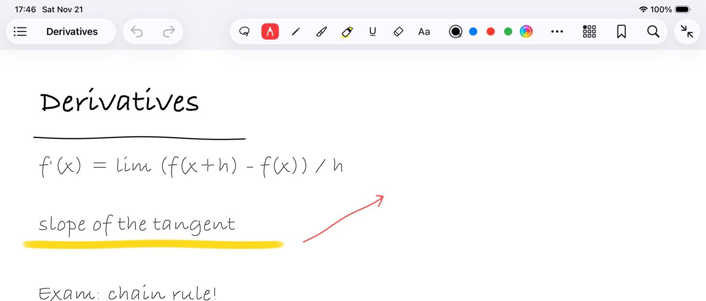
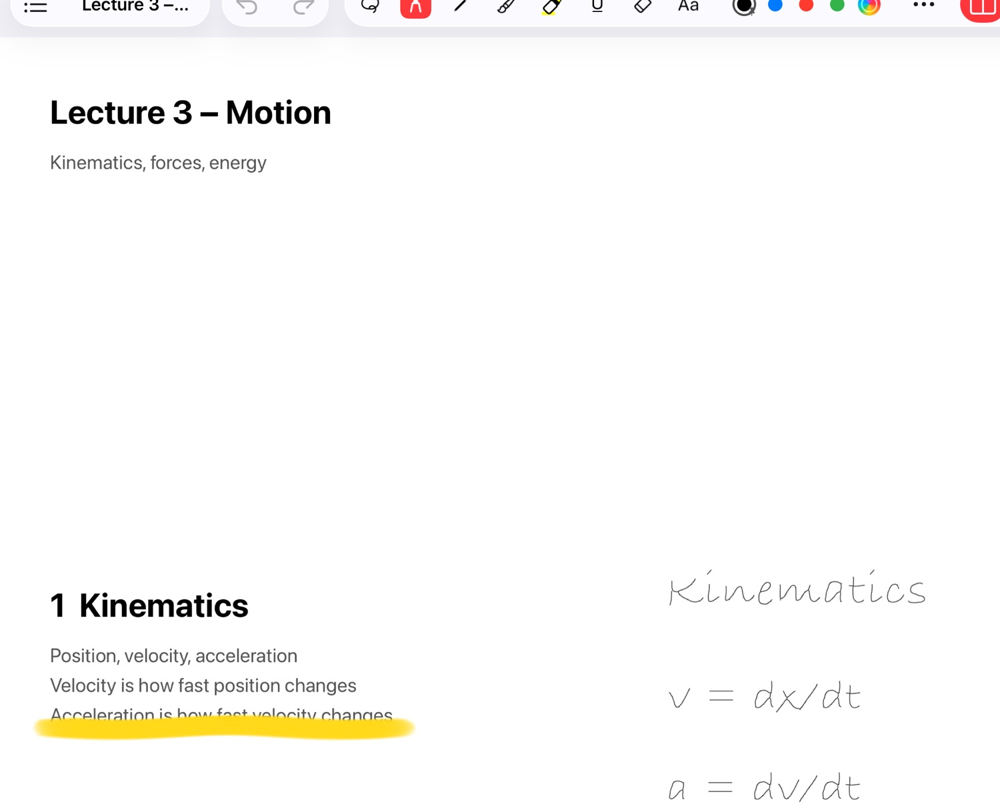
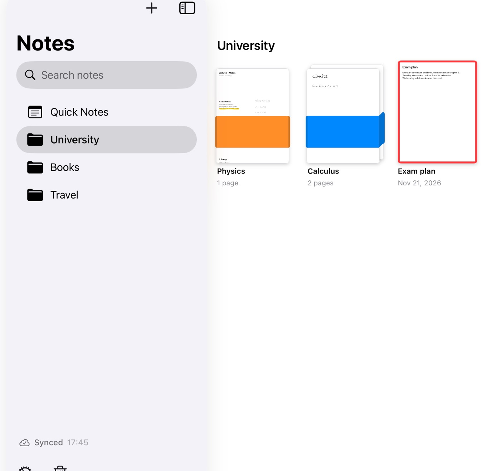

La tua scrittura, su ogni dispositivo.
Gratis su iPad, iPhone e Mac. Senza pubblicità, senza account.


Gratis su iPad, iPhone e Mac. Senza pubblicità, senza account.
Penne, evidenziatore, gomma, lazo, righello e i tuoi colori, nella barra del titolo. Tocca di nuovo uno strumento per spessore, linea e colori.
Tieni ferma la penna alla fine di un tratto per una linea, un cerchio o una freccia puliti. Scarabocchia sopra qualcosa per cancellarlo.



Nero su bianco, bianco su nero, in automatico. Gli evidenziatori si attenuano sulla carta scura.

Prendi la tua scrittura con il lazo e incollala in un'altra nota, o su un altro dei tuoi dispositivi.

Caselle di testo ovunque sulla pagina, o una pagina intera in Modalità testo.
Trasforma le slide di una lezione o un libro intero in pagine su cui scrivere. Le note a lato danno a ogni slide spazio per le tue.


Nel Sommario, e tenuti come capitoli quando condividi un PDF.

Scurisci i PDF rende scure le slide bianche, senza toccare il file.
La Modalità lettura mette le pagine affiancate. La ricerca trova le parole nel testo digitato, nei PDF e in quello che hai scritto a mano, letto sul dispositivo.


Il riconoscimento del testo di Apple la legge sul tuo dispositivo. Niente esce da lì.
Note rapide per tutto, cartelle per le tue materie, gruppi al loro interno. Trascina una nota su un'altra per fare un gruppo, e scrivi >> per collegare una nota, un gruppo o un segnalibro.

Le tue note su iPad, iPhone e Mac con il tuo iCloud Drive: niente iscrizione, niente da ospitare, niente da pagare.
Sulla stessa Wi‑Fi o hotspot, una modifica arriva in circa un secondo, anche sulla pagina aperta.


Niente a cui iscriversi, niente in cui accedere.
Niente pubblicità, niente statistiche, nessun dato raccolto. Niente viene inviato a noi.
Le note restano sui tuoi dispositivi e nel tuo iCloud. Quelle eliminate aspettano 60 giorni nel Cestino.
Niente abbonamento, niente funzioni bloccate, niente pubblicità. Tutto, su ogni dispositivo.
Sì: Ultimate Notes è gratis su iPad, iPhone e Mac, senza pubblicità, senza abbonamento, senza acquisti in-app e senza account. Scrittura a mano, PDF, ricerca e sync sono tutti inclusi.
Sì. Tutte le funzioni sono incluse su iPad, iPhone e Mac: niente abbonamento, niente acquisti in-app, niente pubblicità.
No. Non c'è niente a cui iscriversi. Le note si sincronizzano con il tuo iCloud Drive.
Sì. Scrivi e disegna con il dito su iPad e iPhone, o con mouse e trackpad su Mac.
Sì. Importa un PDF o un libro e scrivi sulle sue pagine, con spazio accanto a ogni slide per le note a lato. Condividi come PDF tiene capitoli e segnalibri.
Esportale come PDF dall'app che usi ora e importa il PDF in Ultimate Notes: puoi continuare a scrivere su ogni pagina.
Sì. La ricerca trova le parole scritte a mano, nel testo digitato e nei PDF. La scrittura è letta sul tuo dispositivo; niente esce da lì.
Nessuno. Niente tracciamento, niente statistiche, niente inviato a noi. Le tue note restano sui tuoi dispositivi e nel tuo iCloud Drive.
iPad e iPhone con iPadOS o iOS 18 o successivi, e Mac con macOS 15 o successivi. L'app è in italiano, inglese, tedesco, spagnolo e francese.
Gratis su App Store per iPad, iPhone e Mac.